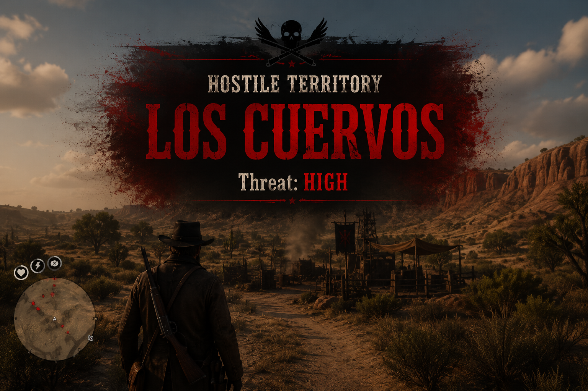

Los Cuervos
A high-threat outlaw force occupying a three-part camp complex. The encounter currently contains eighteen hostile NPCs across the main camp, surface position, and bunker.

Threat
HIGH
All members join combat when the camp is alerted.
Current Weapon Loadout
WEAPON_UNARMED
The current live script explicitly forces every Los Cuervos NPC to remain unarmed, including after aggro begins.
Total Population
18 NPCs
Main Camp: 10 · Surface: 5 · Bunker: 3
Camp Coordinates
| Area | Coordinates | Population |
|---|---|---|
| Main Camp | -5450.00 -3650.00 -15.00 | 10 |
| Surface Position | -5415.88 -3643.23 -22.17 | 5 |
| Bunker Position | -5395.77 -3666.90 -25.01 | 3 |
Ped Models in Use
| Ped model | Count | Assigned roles |
|---|---|---|
G_M_M_UniBanditos_01 | 7 | Guard, wander, clean |
G_M_M_UniCriminals_01 | 4 | Sit, wander, leader, guard |
G_M_M_UniCriminals_02 | 2 | Sit |
G_M_M_UniDuster_01 | 3 | Guard, lean |
A_M_M_Rancher_01 | 1 | Lean |
G_M_M_UniMountainMen_01 | 1 | Rest |
Behavior
Camp members stand guard, wander, sit, lean, rest, clean a rifle, or act as the leader until alerted. Combat settings use 35 accuracy, medium combat ability, offensive movement, long combat range, and 60-meter sight and hearing ranges.
Current implementation note: despite the clean-rifle ambient scenario, the live weapon assignment is unarmed for every member.